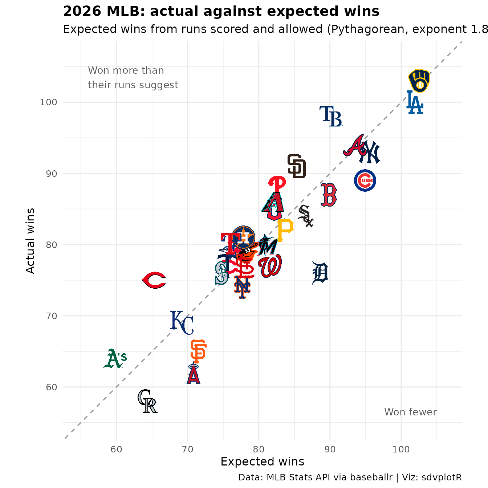
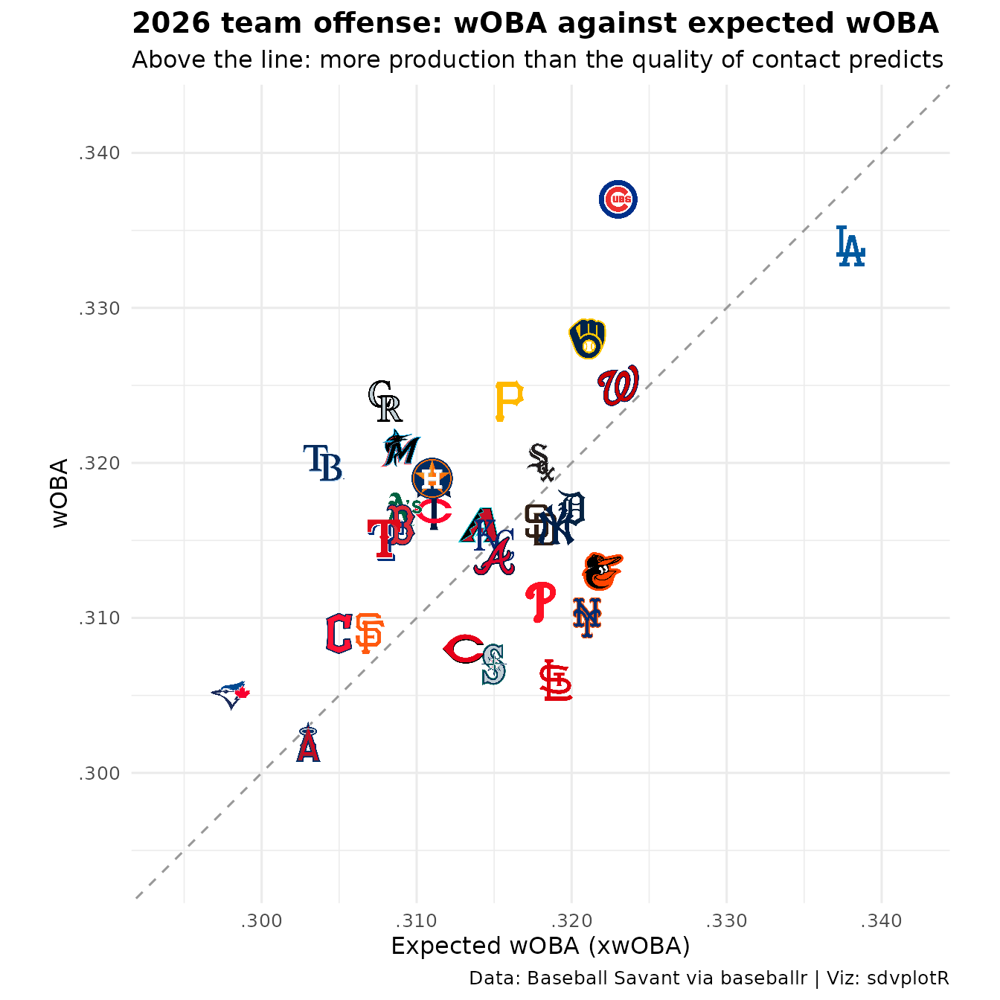
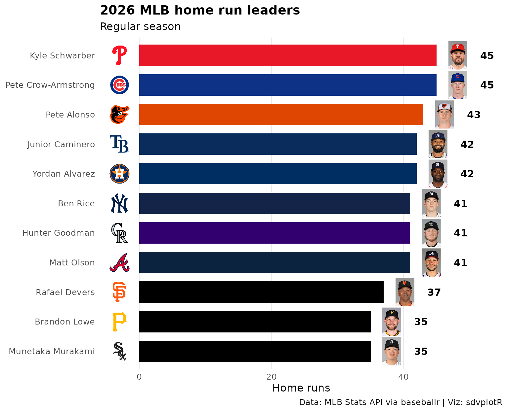
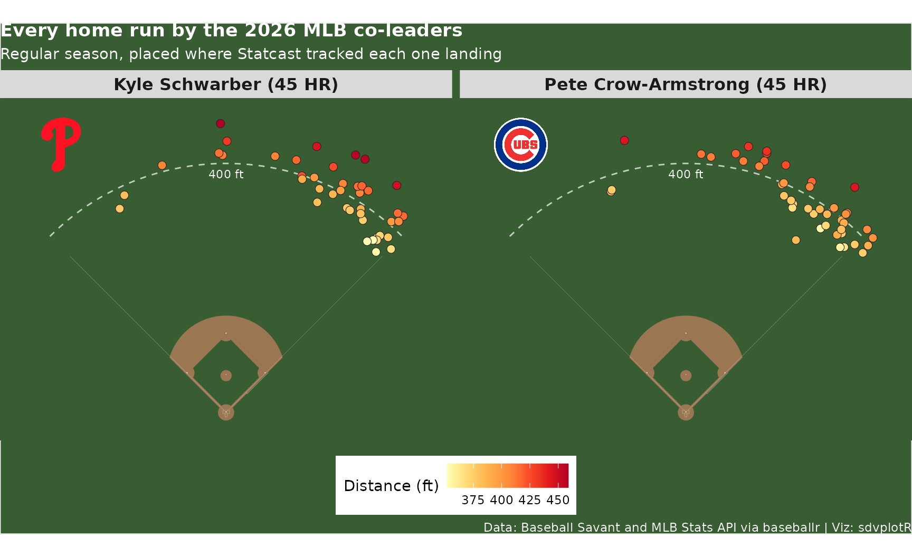
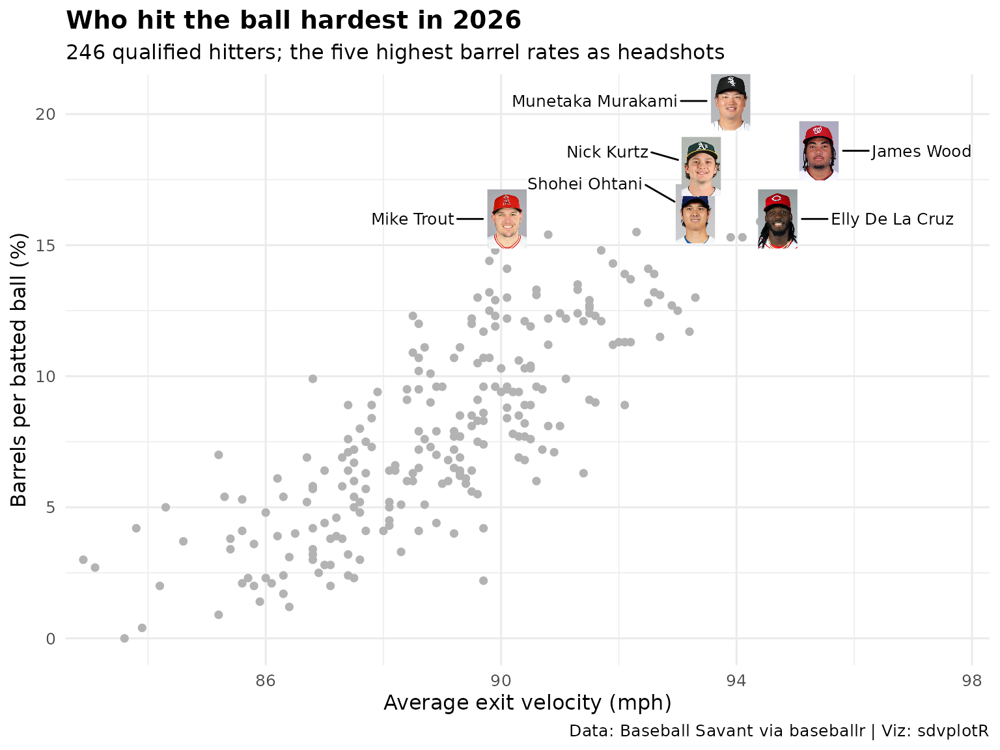
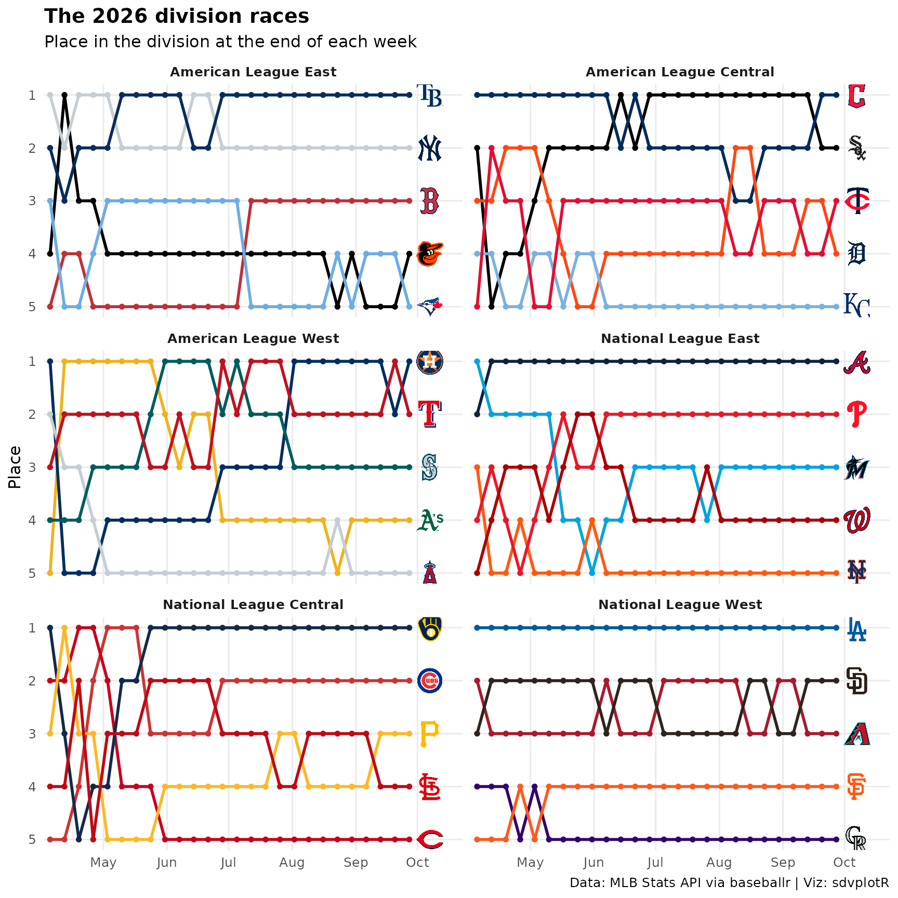
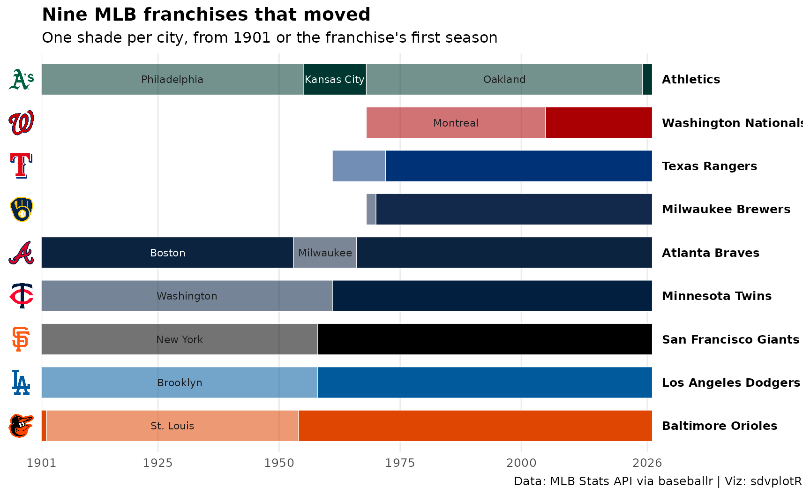
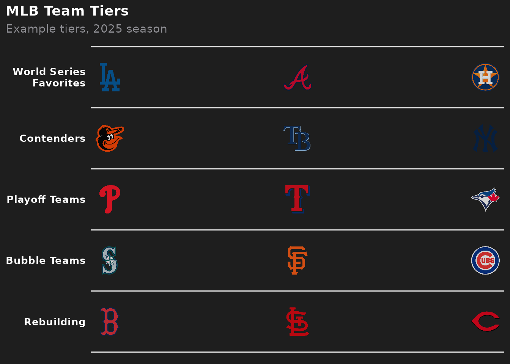

On this page
Ten charts and tables from the 2026 MLB regular season: run differential in team colors, division standings, Pythagorean luck, team and player Statcast numbers, home run leaders with their headshots, a spray chart on the field, the division races week by week, the franchises that moved, and the postseason field as a tier list. The data comes from two public sources through baseballr: the MLB Stats API and Baseball Savant. Neither needs a key.
Load the season
Standings, every regular-season result, the home run leaders and the name and abbreviation of nine relocated franchises in every season since 1901, from the MLB Stats API:
season <- 2026 # the regular season ended on September 27
teams <- baseballr::mlb_teams(season = season, sport_ids = 1) |>
select(team_id, abbreviation = team_abbreviation, team_name = team_full_name, division = division_name)
standings <- baseballr::mlb_standings(season = season, league_id = "103,104") |>
transmute(
team_id = team_records_team_id,
rank = as.integer(team_records_division_rank),
w = team_records_wins,
l = team_records_losses,
gb = team_records_games_back,
wc_gb = team_records_wild_card_games_back,
rs = team_records_runs_scored,
ra = team_records_runs_allowed,
diff = team_records_run_differential,
strk = team_records_streak_streak_code,
clinch = team_records_clinch_indicator
) |>
inner_join(teams, by = "team_id")
games <- baseballr::mlb_schedule(season = season, level_ids = "1") |>
filter(game_type == "R", status_detailed_state %in% c("Final", "Completed Early")) |>
transmute(
game_pk,
date = as.Date(official_date),
home_id = teams_home_team_id,
away_id = teams_away_team_id,
home_score = teams_home_score,
away_score = teams_away_score
)
hitters <- baseballr::mlb_stats(
stat_type = "season", stat_group = "hitting", season = season, player_pool = "All",
sort_stat = "homeRuns", order = "desc", limit = 40
) |>
select(player_id, player = player_full_name, team_id, games_played, home_runs)
# Athletics, Braves, Dodgers, Giants, Orioles, Twins, Rangers, Nationals, Brewers
moved <- c(133, 144, 119, 137, 110, 142, 140, 120, 158)
identities <- lapply(1901:season, \(s) baseballr::mlb_teams(season = s, sport_ids = 1)) |>
bind_rows() |>
filter(team_id %in% moved) |>
select(team_id, season, name = team_full_name, abbreviation = team_abbreviation)Team expected statistics, every qualified hitter’s quality of contact and the home run leaders’ batted balls, from Baseball Savant:
team_xstats <- baseballr::statcast_leaderboards(
leaderboard = "expected_statistics", year = season, player_type = "batter-team"
) |>
select(team_id, woba, est_woba)
contact <- baseballr::statcast_leaderboards(
leaderboard = "exit_velocity_barrels", year = season, player_type = "batter"
) |>
select(player_id, name = `last_name, first_name`, attempts, avg_hit_speed, brl_percent)
# every home run the season's leader(s) hit, with Statcast's hit coordinates
leaders <- hitters$player_id[hitters$home_runs == max(hitters$home_runs)]
homers <- lapply(leaders, \(id) {
baseballr::statcast_search_batters(paste0(season, "-03-01"), paste0(season, "-10-01"), batterid = id)
}) |>
bind_rows() |>
filter(events == "home_run", game_type == "R") |>
select(batter, game_date, hc_x, hc_y, hit_distance_sc, launch_speed)The output below uses a snapshot of these calls taken on October 05,
2026 (baseballr 2.0.0), because neither API is called when this site is
built; data-raw/article_fixtures.R takes it with the same
code.
The Stats API and Savant write a few team abbreviations differently
from ESPN, whose abbreviations sdvplotR keys its team colors on.
clean_team_abbrs() converts them once, at the start, so
every later join and color scale agrees:
standings <- standings |>
mutate(team = clean_team_abbrs(abbreviation, sport = "mlb"), pct = w / (w + l))
standings |>
filter(team != abbreviation) |>
select(team_name, abbreviation, team)
#> team_name abbreviation team
#> 1 Chicago White Sox CWS CHW
#> 2 Arizona Diamondbacks AZ ARI
stats_api <- "Data: MLB Stats API via baseballr | Viz: sdvplotR"
savant <- "Data: Baseball Savant via baseballr | Viz: sdvplotR"
# baseball writes rates without the leading zero: .412
rate <- function(x) sub("^(-?)0\\.", "\\1.", sprintf("%.3f", x))1. Run differential in team colors
scale_fill_sdv() fills each bar with its team’s color,
and scale_x_sdv() with theme_x_sdv() puts the
logos on the axis in place of the abbreviations.
run_diff <- standings |>
arrange(desc(diff), team) |>
mutate(team = factor(team, levels = team))
ggplot(run_diff, aes(team, diff, fill = team)) +
geom_col(width = 0.75) +
geom_hline(yintercept = 0, colour = "grey20", linewidth = 0.4) +
scale_fill_sdv(sport = "mlb") +
scale_x_sdv(sport = "mlb", size = 20) +
labs(
title = paste(season, "MLB run differential"),
subtitle = "Regular season, runs scored minus runs allowed",
x = NULL,
y = "Run differential",
caption = stats_api
) +
theme_minimal(base_size = 12) +
theme_x_sdv() +
theme(
legend.position = "none",
panel.grid.major.x = element_blank(),
plot.title = element_text(face = "bold")
)
2. Division standings table
A gt table grouped by division: gt_sdv_logos() turns the
abbreviation column into logos and gt_theme_savant() gives
it the Baseball Savant look. The run differential fill goes on after the
theme, so the theme’s styling cannot replace it.
divisions <- paste(
rep(c("American League", "National League"), each = 3),
c("East", "Central", "West")
)
lim <- max(abs(standings$diff))
standings |>
mutate(division = factor(division, levels = divisions), logo = team) |>
arrange(division, rank) |>
select(division, logo, team_name, w, l, pct, gb, rs, ra, diff, strk) |>
gt(groupname_col = "division") |>
gt_sdv_logos(columns = "logo", sport = "mlb", height = 24) |>
fmt(columns = pct, fns = rate) |>
cols_label(
logo = "", team_name = "Team", w = "W", l = "L", pct = "Pct", gb = "GB",
rs = "RS", ra = "RA", diff = "Diff", strk = "Strk"
) |>
tab_header(
title = paste(season, "MLB standings"),
subtitle = "Final regular-season standings by division"
) |>
tab_source_note(stats_api) |>
gt_theme_savant() |>
data_color(columns = diff, palette = c("#c84630", "white", "#2a7ab9"), domain = c(-lim, lim))| 2026 MLB standings | |||||||||
| Final regular-season standings by division | |||||||||
| Team | W | L | Pct | GB | RS | RA | Diff | Strk | |
|---|---|---|---|---|---|---|---|---|---|
| American League East | |||||||||
 |
Tampa Bay Rays | 98 | 64 | .605 | - | 736 | 650 | 86 | L1 |
 |
New York Yankees | 93 | 68 | .578 | 4.5 | 739 | 601 | 138 | W1 |
 |
Boston Red Sox | 87 | 75 | .537 | 11.0 | 689 | 611 | 78 | L1 |
 |
Baltimore Orioles | 79 | 82 | .491 | 18.5 | 718 | 739 | -21 | L1 |
 |
Toronto Blue Jays | 79 | 83 | .488 | 19.0 | 648 | 694 | -46 | W1 |
| American League Central | |||||||||
 |
Cleveland Guardians | 85 | 77 | .525 | - | 678 | 667 | 11 | L1 |
 |
Chicago White Sox | 84 | 78 | .519 | 1.0 | 776 | 720 | 56 | W1 |
 |
Minnesota Twins | 77 | 85 | .475 | 8.0 | 739 | 797 | -58 | W1 |
 |
Detroit Tigers | 76 | 86 | .469 | 9.0 | 723 | 652 | 71 | L1 |
 |
Kansas City Royals | 69 | 93 | .426 | 16.0 | 690 | 810 | -120 | W1 |
| American League West | |||||||||
 |
Houston Astros | 81 | 81 | .500 | - | 734 | 766 | -32 | W2 |
 |
Texas Rangers | 80 | 82 | .494 | 1.0 | 673 | 719 | -46 | L1 |
 |
Seattle Mariners | 76 | 86 | .469 | 5.0 | 664 | 722 | -58 | W2 |
 |
Athletics | 64 | 98 | .395 | 17.0 | 699 | 937 | -238 | L2 |
 |
Los Angeles Angels | 62 | 100 | .383 | 19.0 | 655 | 752 | -97 | L2 |
| National League East | |||||||||
 |
Atlanta Braves | 94 | 68 | .580 | - | 742 | 626 | 116 | L1 |
 |
Philadelphia Phillies | 88 | 74 | .543 | 6.0 | 713 | 698 | 15 | W1 |
 |
Miami Marlins | 80 | 82 | .494 | 14.0 | 715 | 712 | 3 | W1 |
 |
Washington Nationals | 77 | 85 | .475 | 17.0 | 821 | 815 | 6 | W1 |
 |
New York Mets | 74 | 88 | .457 | 20.0 | 699 | 731 | -32 | L1 |
| National League Central | |||||||||
 |
Milwaukee Brewers | 103 | 59 | .636 | - | 832 | 618 | 214 | W5 |
 |
Chicago Cubs | 89 | 73 | .549 | 14.0 | 850 | 703 | 147 | W1 |
 |
Pittsburgh Pirates | 82 | 80 | .506 | 21.0 | 767 | 739 | 28 | W1 |
 |
St. Louis Cardinals | 77 | 85 | .475 | 26.0 | 720 | 749 | -29 | L4 |
 |
Cincinnati Reds | 75 | 87 | .463 | 28.0 | 666 | 826 | -160 | L1 |
| National League West | |||||||||
 |
Los Angeles Dodgers | 100 | 62 | .617 | - | 801 | 600 | 201 | W3 |
 |
San Diego Padres | 91 | 71 | .562 | 9.0 | 722 | 681 | 41 | W2 |
 |
Arizona Diamondbacks | 86 | 76 | .531 | 14.0 | 739 | 730 | 9 | L2 |
 |
San Francisco Giants | 65 | 97 | .401 | 35.0 | 669 | 760 | -91 | L5 |
 |
Colorado Rockies | 58 | 104 | .358 | 42.0 | 752 | 944 | -192 | L1 |
| Data: MLB Stats API via baseballr | Viz: sdvplotR | |||||||||
3. Pythagorean wins: who beat their run differential
Expected wins from runs scored and allowed (Bill James’s formula with the 1.83 exponent) against actual wins. Teams above the dashed line won more games than their runs suggest.
pyth <- standings |>
mutate(xw = rs^1.83 / (rs^1.83 + ra^1.83) * (w + l), luck = w - xw)
lims <- range(pyth$xw, pyth$w) + c(-3, 3)
ggplot(pyth, aes(xw, w)) +
geom_abline(slope = 1, intercept = 0, linetype = "dashed", colour = "grey60") +
annotate(
"text", x = lims[1] + 1, y = lims[2] - 1, hjust = 0, vjust = 1, size = 3.6,
colour = "grey35", label = "Won more than\ntheir runs suggest"
) +
annotate(
"text", x = lims[2] - 1, y = lims[1] + 1, hjust = 1, vjust = 0, size = 3.6,
colour = "grey35", label = "Won fewer"
) +
geom_sdv_logos(aes(team = team), sport = "mlb", width = 0.065) +
coord_equal(xlim = lims, ylim = lims) +
labs(
title = paste(season, "MLB: actual against expected wins"),
subtitle = "Expected wins from runs scored and allowed (Pythagorean, exponent 1.83)",
x = "Expected wins",
y = "Actual wins",
caption = stats_api
) +
theme_minimal(base_size = 12) +
theme(plot.title = element_text(face = "bold"))
The Cincinnati Reds won 9.8 games more than their run differential predicts; the Detroit Tigers won 12.6 fewer.
4. Statcast: team wOBA against expected wOBA
Baseball Savant’s expected statistics at the team level. Expected
wOBA (xwOBA) grades every batted ball by its exit velocity and launch
angle, so a team above the line got more from its contact than the
contact’s quality predicts. Savant’s team_id column holds
abbreviations, which clean_team_abbrs() converts like any
other.
xstats <- team_xstats |>
mutate(team = clean_team_abbrs(team_id, sport = "mlb"))
lims <- range(xstats$woba, xstats$est_woba) + c(-0.004, 0.004)
ggplot(xstats, aes(est_woba, woba)) +
geom_abline(slope = 1, intercept = 0, linetype = "dashed", colour = "grey60") +
geom_sdv_logos(aes(team = team), sport = "mlb", width = 0.055) +
scale_x_continuous(labels = rate) +
scale_y_continuous(labels = rate) +
coord_equal(xlim = lims, ylim = lims) +
labs(
title = paste(season, "team offense: wOBA against expected wOBA"),
subtitle = "Above the line: more production than the quality of contact predicts",
x = "Expected wOBA (xwOBA)",
y = "wOBA",
caption = savant
) +
theme_minimal(base_size = 12) +
theme(plot.title = element_text(face = "bold"))
5. Home run leaders with headshots
The Stats API and Savant identify players by their MLBAM ID, which is
why the headshots pass id_type = "league": it draws MLBAM
IDs from MLB’s own image CDN. Leave id_type unset for ESPN
athlete IDs, such as those in baseballr’s espn_mlb_*()
data. Both are plain numbers, so the wrong setting draws someone else or
nothing. Everyone tied for tenth makes the list.
hr_leaders <- hitters |>
filter(min_rank(desc(home_runs)) <= 10) |>
inner_join(select(standings, team_id, team), by = "team_id") |>
arrange(home_runs, desc(player)) |>
mutate(player = factor(player, levels = player))
ggplot(hr_leaders, aes(home_runs, player)) +
geom_col(aes(fill = team), width = 0.72) +
geom_sdv_logos(aes(x = -3, team = team), sport = "mlb", height = 0.065) +
geom_sdv_headshots(
aes(x = home_runs + 3.2, player_id = player_id),
sport = "mlb", id_type = "league", height = 0.085
) +
geom_text(aes(x = home_runs + 6.6, label = home_runs), hjust = 0, fontface = "bold", size = 4) +
scale_fill_sdv(sport = "mlb") +
scale_x_continuous(limits = c(-6, max(hr_leaders$home_runs) + 10), expand = expansion(0)) +
labs(
title = paste(season, "MLB home run leaders"),
subtitle = "Regular season",
x = "Home runs",
y = NULL,
caption = stats_api
) +
theme_minimal(base_size = 12) +
theme(
legend.position = "none",
panel.grid.major.y = element_blank(),
panel.grid.minor = element_blank(),
plot.title = element_text(face = "bold")
)
6. A spray chart on the field
sdv_surface("mlb") draws a regulation infield with
‘sportyR’, and the data goes on top as ordinary layers. Statcast’s hit
coordinates become feet from home plate with the usual transform
(baseballr’s mlbam_xy_transformation() uses the same one);
xlims and ylims pass through to ‘sportyR’ to
show the outfield. The two co-leaders get a panel each.
spray <- homers |>
mutate(x = 2.5 * (hc_x - 125.42), y = 2.5 * (198.27 - hc_y)) |>
filter(!is.na(x)) |>
inner_join(select(hitters, batter = player_id, player, team_id, home_runs), by = "batter") |>
inner_join(select(standings, team_id, team), by = "team_id") |>
mutate(player = paste0(player, " (", home_runs, " HR)"))
arc <- data.frame(t = seq(-pi / 4, pi / 4, length.out = 50)) |>
mutate(x = 400 * sin(t), y = 400 * cos(t))
sdv_surface("mlb", xlims = c(-330, 330), ylims = c(-20, 480)) +
geom_path(aes(x, y), data = arc, linetype = "dashed", colour = "white", alpha = 0.7) +
annotate("text", x = 0, y = 390, label = "400 ft", colour = "white", size = 3, vjust = 1) +
geom_point(
aes(x, y, fill = hit_distance_sc),
data = spray, shape = 21, size = 2.6, colour = "grey15", stroke = 0.3
) +
geom_sdv_logos(
aes(x = -265, y = 430, team = team),
data = distinct(spray, player, team), sport = "mlb", width = 0.13
) +
scale_fill_distiller(palette = "YlOrRd", direction = 1, name = "Distance (ft)") +
facet_wrap(~player) +
labs(
title = paste("Every home run by the", season, "MLB co-leaders"),
subtitle = "Regular season, placed where Statcast tracked each one landing",
caption = "Data: Baseball Savant and MLB Stats API via baseballr | Viz: sdvplotR"
) +
# sportyR paints the whole figure as the field, so the text goes white
theme(
plot.title = element_text(face = "bold", colour = "white"),
plot.subtitle = element_text(colour = "white"),
plot.caption = element_text(colour = "white"),
strip.text = element_text(face = "bold", size = 12),
legend.position = "bottom"
)
7. Quality of contact: exit velocity and barrels
Every qualified hitter from Savant’s exit velocity leaderboard as a grey point, and the five highest barrel rates as headshots (a tie for fifth makes it six hitters). A barrel is a batted ball with the exit velocity and launch angle that produce at least a .500 batting average and 1.500 slugging. The names sit beside the headshots, pushed apart vertically by ggrepel.
contact <- contact |>
mutate(player = paste(sub(".*, ", "", name), sub(",.*", "", name))) # "Ohtani, Shohei"
barrels <- contact |>
filter(min_rank(desc(brl_percent)) <= 5) |>
# names to the left of the headshots, except at the right edge
mutate(side = if_else(avg_hit_speed > 94.5, 1, -1))
name_labels <- function(side) {
ggrepel::geom_text_repel(
aes(label = player),
data = filter(barrels, side == !!side), size = 3.3, point.size = 13, box.padding = 0.4,
nudge_x = 0.9 * side, direction = "y", hjust = if (side > 0) 0 else 1,
min.segment.length = 0, bg.colour = "white", bg.r = 0.15, seed = 1
)
}
ggplot(contact, aes(avg_hit_speed, brl_percent)) +
geom_point(colour = "grey70", size = 1.6) +
geom_sdv_headshots(
aes(player_id = player_id),
data = barrels, sport = "mlb", id_type = "league", height = 0.1
) +
name_labels(-1) +
name_labels(1) +
scale_x_continuous(expand = expansion(add = c(0.3, 2))) +
labs(
title = paste("Who hit the ball hardest in", season),
subtitle = paste(nrow(contact), "qualified hitters; the five highest barrel rates as headshots"),
x = "Average exit velocity (mph)",
y = "Barrels per batted ball (%)",
caption = savant
) +
theme_minimal(base_size = 12) +
theme(plot.title = element_text(face = "bold"))
8. The division races, week by week
A bump chart: each team’s place in its division at the end of every week, from every regular-season result. A suspended game is listed on the day it started and the day it ended; keeping the last date counts it once. The final week matches the official standings.
Division rivals often share a color (four of the five AL Central
clubs are navy or black), so the lines take their colors from
sdv_team_colors(): each team keeps its primary color unless
that is too close to a color already used in its division, and then
takes its secondary.
games <- slice_max(games, date, by = game_pk)
results <- bind_rows(
transmute(games, date, team_id = home_id, win = home_score > away_score),
transmute(games, date, team_id = away_id, win = away_score > home_score)
)
# every Sunday from the first full week to the last day of the season
weeks <- seq(as.Date(paste0(season, "-04-05")), max(games$date), by = "week")
race <- cross_join(tibble(week = weeks), distinct(results, team_id)) |>
left_join(results, by = join_by(team_id, week >= date)) |>
summarise(w = sum(win), l = sum(!win), .by = c(week, team_id)) |>
inner_join(select(standings, team_id, team, division, official = rank), by = "team_id") |>
arrange(week, desc(w), team) |>
mutate(place = row_number(desc(w / (w + l))), .by = c(week, division))
final <- filter(race, week == max(weeks))
stopifnot(all(final$place == final$official))
# the primary, unless it is within 20 (CIE 2000 color difference) of the white
# background or of a color already taken, and the secondary is farther away
distinct_colours <- function(primary, secondary, min_gap = 20) {
taken <- "#FFFFFF"
gap <- function(x) {
min(farver::compare_colour(
farver::decode_colour(x), farver::decode_colour(taken), "rgb",
method = "cie2000"
))
}
for (i in seq_along(primary)) {
swap <- gap(primary[i]) < min_gap && gap(secondary[i]) > gap(primary[i])
taken <- c(taken, if (swap) secondary[i] else primary[i])
}
taken[-1]
}
line_colours <- final |>
arrange(division, place) |>
inner_join(sdv_team_colors("mlb", type = "all"), by = c(team = "team_abbr")) |>
mutate(colour = distinct_colours(primary, secondary), .by = division)
ggplot(race, aes(week, place, colour = team)) +
geom_line(linewidth = 1) +
geom_point(size = 1.3) +
# inherit.aes = FALSE: a colour aesthetic would tint the logos
geom_sdv_logos(
aes(x = week + 10, y = place, team = team),
data = final, sport = "mlb", width = 0.07, inherit.aes = FALSE
) +
scale_colour_manual(values = setNames(line_colours$colour, line_colours$team)) +
scale_y_reverse(breaks = 1:5) +
scale_x_date(date_labels = "%b", expand = expansion(add = c(3, 16))) +
facet_wrap(~ factor(division, levels = divisions), ncol = 2) +
labs(
title = paste("The", season, "division races"),
subtitle = "Place in the division at the end of each week",
x = NULL,
y = "Place",
caption = stats_api
) +
theme_minimal(base_size = 12) +
theme(
legend.position = "none",
panel.grid.minor = element_blank(),
strip.text = element_text(face = "bold"),
plot.title = element_text(face = "bold")
)
9. Franchise moves since 1901
Nine franchises that changed cities, one bar per franchise, one shade
per city. The abbreviations change with the eras (PHA, KCA, OAK, ATH for
the Athletics), but the Stats API team id never does, so each franchise
is keyed by its id and drawn with today’s logo on the axis
(scale_y_sdv() with theme_y_sdv()). Old
abbreviations are not a reliable key:
clean_team_abbrs(c("OAK", "KCA", "MON", "BRO"), sport = "mlb", keep_non_matches = FALSE)
#> [1] "ATH" "KC" "WSH" NAsdvplotR maps the Oakland and Montreal codes to the clubs they became, but KCA, the Kansas City Athletics, matches KC, today’s Royals. The Stats API lists the 1969 expansion Expos and Pilots from 1968, the year they were founded.
eras <- identities |>
# the city is the name without its last word ("Athletics" alone has none)
mutate(city = sub(" [^ ]+$", "", name)) |>
arrange(team_id, season) |>
mutate(era = consecutive_id(city), .by = team_id) |>
summarise(
from = min(season), to = max(season), city = first(city), name = last(name),
.by = c(team_id, era)
) |>
inner_join(select(standings, team_id, team), by = "team_id") |>
mutate(
last_move = max(from), current = era == max(era),
# today's city in full color, earlier ones alternating lighter and darker
dark = (max(era) - era) %% 2 == 0,
width = to - from + 1, mid = from + width / 2,
.by = team_id
) |>
mutate(
team = reorder(team, last_move),
# earlier cities go inside their era where they fit
label = if_else(!current & width >= 1.15 * nchar(city), city, NA)
)
ggplot(eras, aes(y = team)) +
geom_tile(aes(x = mid, width = width, fill = team, alpha = dark), height = 0.72, colour = "white") +
geom_text(
aes(x = mid, label = label, colour = if_else(dark, "white", "grey10")),
size = 2.9, na.rm = TRUE
) +
geom_text(
aes(x = to + 3, label = name),
data = filter(eras, current), hjust = 0, size = 3.3, fontface = "bold"
) +
scale_fill_sdv(sport = "mlb") +
scale_alpha_manual(values = c(`TRUE` = 1, `FALSE` = 0.55)) +
scale_colour_identity() +
scale_x_continuous(
breaks = c(1901, seq(1925, 2000, 25), season),
limits = c(1901, season + 32), expand = expansion(0)
) +
scale_y_sdv(sport = "mlb", size = 22) +
labs(
title = "Nine MLB franchises that moved",
subtitle = "One shade per city, from 1901 or the franchise's first season",
x = NULL,
y = NULL,
caption = stats_api
) +
theme_minimal(base_size = 12) +
theme_y_sdv() +
theme(
legend.position = "none",
panel.grid.major.y = element_blank(),
panel.grid.minor = element_blank(),
plot.title = element_text(face = "bold")
)
10. The postseason field as a tier list
sdv_team_tiers() draws a tier list from a tier and a
team column. The tiers here come from the standings’ clinch codes
(y and z won a division, w a wild
card) and the games behind the last wild card; within a tier the teams
go by wins. On the dark background each team draws its dark-background
logo, so the navy and brown marks (the Yankees’, the Padres’, the
Royals’) come out white or gold instead of disappearing.
field <- standings |>
mutate(
behind = suppressWarnings(as.numeric(wc_gb)), # "-" and "+2.0" belong to playoff teams
tier_no = case_when(
clinch %in% c("y", "z") ~ 1,
clinch == "w" ~ 2,
behind <= 5 ~ 3,
.default = 4
)
) |>
arrange(tier_no, desc(w), team) |>
mutate(tier_rank = row_number(), .by = tier_no)
stopifnot(sum(field$tier_no == 1) == 6, sum(field$tier_no == 2) == 6)
sdv_team_tiers(
select(field, tier_no, tier_rank, team),
sport = "mlb",
title = paste("How the", season, "postseason field was built"),
subtitle = "Regular season; teams ordered by wins within each tier",
caption = stats_api,
tier_desc = c(
"1" = "Division winners",
"2" = "Wild cards",
"3" = "Missed by 5 games or fewer",
"4" = "Missed by more"
),
width = 0.06
)